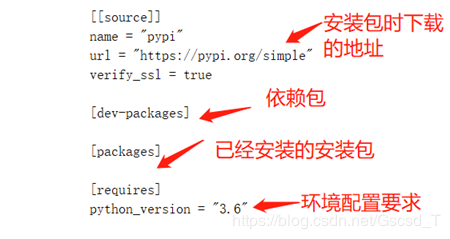

# 查看 python 库
l | python -m site // python 2 版本 |
| python3 -m site // python 3 版本 |
# 安装 python
# 第一种，非源码安装
ubuntu18.04+python3，这个系统是默认自带了 python3，且版本是 python 3.6.8
该 python 3.6.8 中并没有对应的 pip3，于是执行命令 sudo apt-get install python3-pip，即可成功安装 pip3
然后即可通过 pip3 install pipenv , 安装自己需要的 pipenv 模块
# 第二种，源码安装 (非常不推荐，容易踩各种坑)
Install Python3
l | $ yum install zlib-devel.x86_64 |
| $ yum -y install zlib1g-dev |
| $ yum -y install libffi-devel |
| $ yum install openssl-devel -y |
| |
| $ wget https://www.python.org/ftp/python/3.7.2/Python-3.7.2.tar.xz |
| $ tar -xvJf Python-3.7.2.tar.xz |
| $ mkdir /usr/local/python3 |
| $ cd Python-3.7.2 |
| $ ./configure --prefix=/usr/local/python3 --enable-optimizations --with-ssl |
| |
| |
| |
| $ make -j && make install |
# 创建软链接
l | ln -s /usr/local/python3/bin/python3 /usr/bin/python3 |
| ln -s /usr/local/python3/bin/pip3 /usr/bin/pip3 |
PATH 路径需要有 /usr/local/bin, 重启客户端
# 验证是否成功
# 修改 pip 安装源
| $ cd ~ |
| $ mkdir .pip |
| $ cd .pip |
| $ vim pip.conf |
| // 进入后添加以下内容,保存退出. |
| [global] |
| index-url = https://mirrors.aliyun.com/pypi/simple |
# 安装 pipenv
python 里如果多个多个项目同时引用包，就会涉及到包版本的问题，包不同版本管理的问题可以用虚拟环境来管理
创建虚拟环境，这里是用官方推荐的 pipenv 来创建
安装 pipenv
l | 第一种: pip3 install pipenv (亲测可用) |
| 第二种: pip3 install -i https://pypi.tuna.tsinghua.edu.cn/simple pipenv 使用国内源安装pipenv |
| $ pip3 list // 查看 pipnev是否安装完成 |
| pipenv --version //报错如下: |
| * -bash: pipenv: command not found |
| // 原因：未建立软链接: |
| ln -s /usr/local/python3/bin/pipenv /usr/bin/pipenv |
在使用 pipenv 之前，必须彻底的忘记 pip 这个东西
新建一个准备当环境的文件夹 pipenvtest，并 cd 进入该文件夹：
确定 python 版本
l | $ pipenv --three 会使用当前系统的Python3创建环境 |
| $ pipenv --python 3.6 指定某一Python版本创建环境 |
| // 然后该目录下会有一个Pipfile文件, 内容为: |
| [[source]] // 安装包时下载的地址 |
| name = "pypi" |
| url = "https://pypi.org/simple" |
| verify_ssl = true |
| |
| [dev-packages] // 依赖包 |
| |
| [packages] // 已将安装的安装包 |
| |
| [requires] // 环境配置要求 |
| python_version = "3.6" |

l | pipenv shell 激活虚拟环境 |
| pipenv --where 显示目录信息 |
| pipenv --venv 显示虚拟环境信息 |
| pipenv --py 显示Python解释器信息 |
| |
| *. 安装第三方包 |
| pipenv install [第三方库名] 安装相关模块并加入到Pipfile |
| pipenv install django==1.11 安装固定版本模块并加入到Pipfile |
| |
| pipenv graph 查看目前安装的库及其依赖 |
| |
| *. 卸载第三方包 |
| pipenv uninstall [第三方库名] |
| pipenv uninstall --all 卸载当前环境下所有包 |
| |
| *. 更新 |
| pipenv update --更新当前环境下所有包，升级到最新版本 |
| |
| *. 退出 |
| exit 推出虚拟环境 |
| |
| *. 删除虚拟环境 |
| pipenv --rm 删除虚拟环境 |